The Ramayana is one of the two great epics of Hindu literature, composed by the sage Valmiki. It tells the story of Prince Rama, his exile, and his journey to rescue his wife, Sita, from the demon king Ravana.
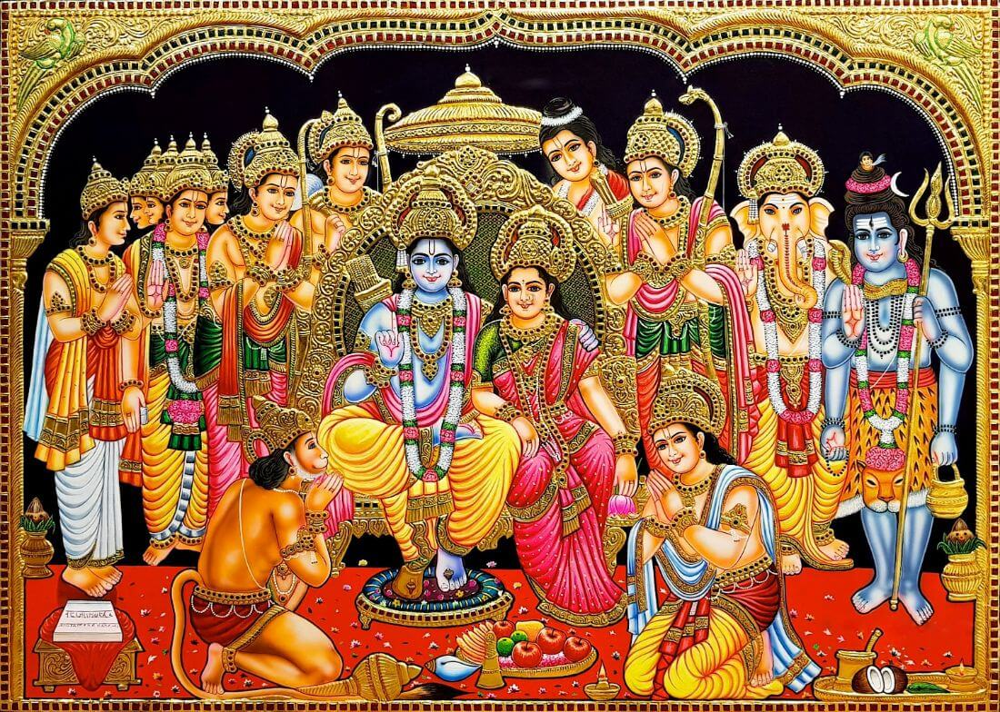The Ramayana is filled with a wide array of characters, each with their own unique role and personality. Key figures include Rama, Sita, Lakshmana, Hanuman, and Ravana.
Prince Rama was born in Ayodhya as the son of King Dasharatha and Queen Kaushalya. His birth marked the arrival of a noble soul destined to restore dharma.
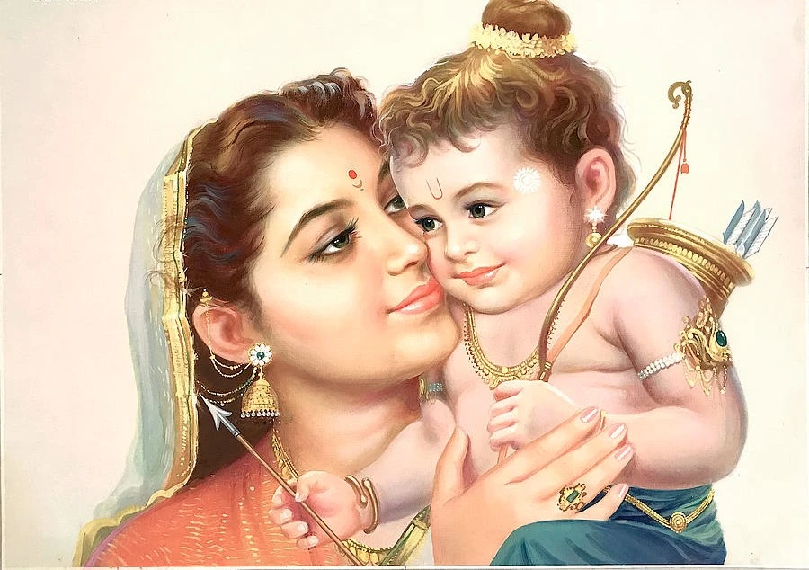Rama, who was about to be crowned king, faced an unexpected twist when Kaikeyi, one of King Dasharatha’s queens, reminded him of a promise he had to fulfill. She demanded that her son Bharata be made king instead and that Rama be exiled for 14 years. Bound by his honor, Dasharatha granted her wish, and Rama accepted his fate, leaving Ayodhya with his wife Sita and brother Lakshmana.
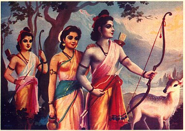During Rama's exile, he and his brother Lakshmana encountered Surpanakha, the demoness sister of Ravana. Struck by Rama's charm, she attempted to marry him, but he rejected her due to his loyalty to Sita. She then turned to Lakshmana, who also refused. In anger, she attacked Sita, but Lakshmana defended her by cutting Surpanakha's nose. Humiliated, she fled to Ravana, sparking his desire for revenge against Rama.
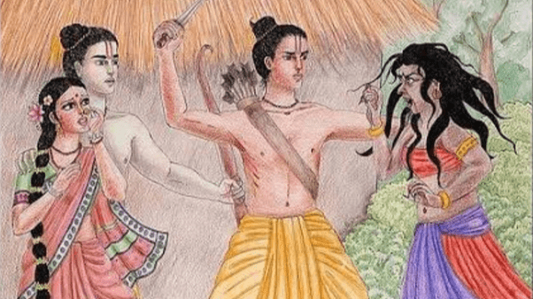During their time in the forest, Sita was captivated by the sight of a golden deer grazing nearby. Entranced by its beauty, she asked Rama to capture it for her as a gift. Despite Lakshmana’s warnings that it might be a trick, Rama agreed to fetch the deer. This decision set off a chain of events that would have significant consequences that is going to be told in the upcoming slides.
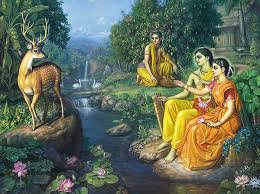While Rama chased the golden deer, Sita grew worried and asked Lakshmana to check on him. Ravana, disguised as a beggar, took advantage of Sita's compassion and tricked her into stepping outside the protective boundary. Once she crossed it, Ravana revealed his true form and abducted her, taking her to Lanka. When Lakshmana returned and found Sita gone, he quickly informed Rama, who set off to rescue her.
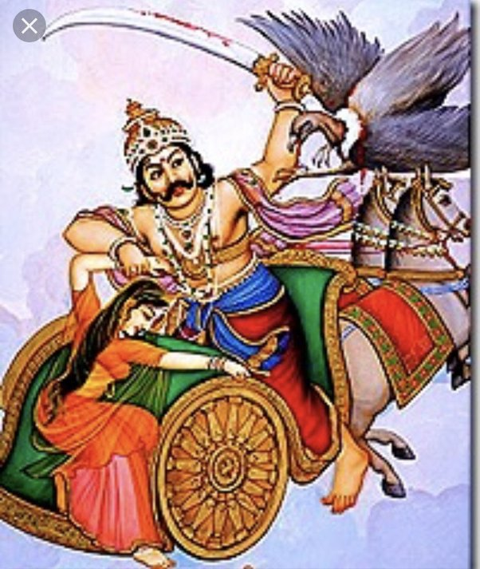After Sita's abduction, Rama and Lakshmana roamed through the forests in search of her. Their journey led them to Hanuman, the mighty monkey god, who instantly recognized Rama as the incarnation of Lord Vishnu. Deeply moved by Rama's divine presence, Hanuman pledged his unwavering loyalty and vowed that it would be his mission to help Rama find Sita.
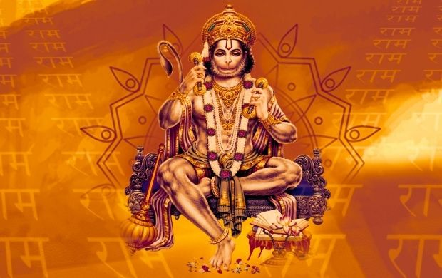Determined to find Sita, Hanuman flew across the vast ocean to reach the city of Lanka. Upon finding her in the Ashoka grove, he gave Sita a ring that Rama had sent as a sign of his love and assurance that he would soon come to rescue her. Hanuman then asked Sita to come with him, promising to take her safely back to Rama. However, Sita, ever faithful to her dharma, refused, explaining that it would be against the law of righteousness for her to leave with him. She told Hanuman that it was Rama's duty to defeat Ravana and rescue her.
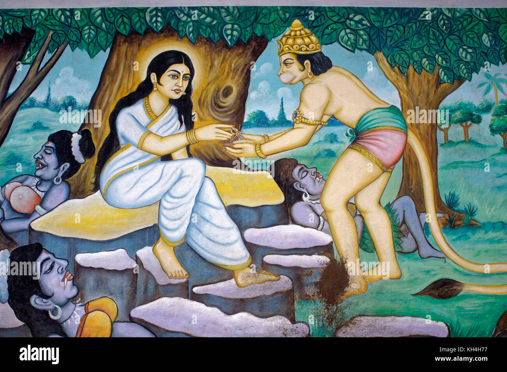After delivering Rama's message to Sita, Hanuman was captured by Ravana's forces. They brought him before Ravana, but Hanuman remained unshaken in his devotion to Rama. To punish him, Ravana ordered that Hanuman's tail be set on fire. In response, Hanuman grew his tail even longer and used it to set fire to Lanka, causing destruction in the demon city. Before escaping, he also left a message for Ravana: Rama would soon come to defeat him.
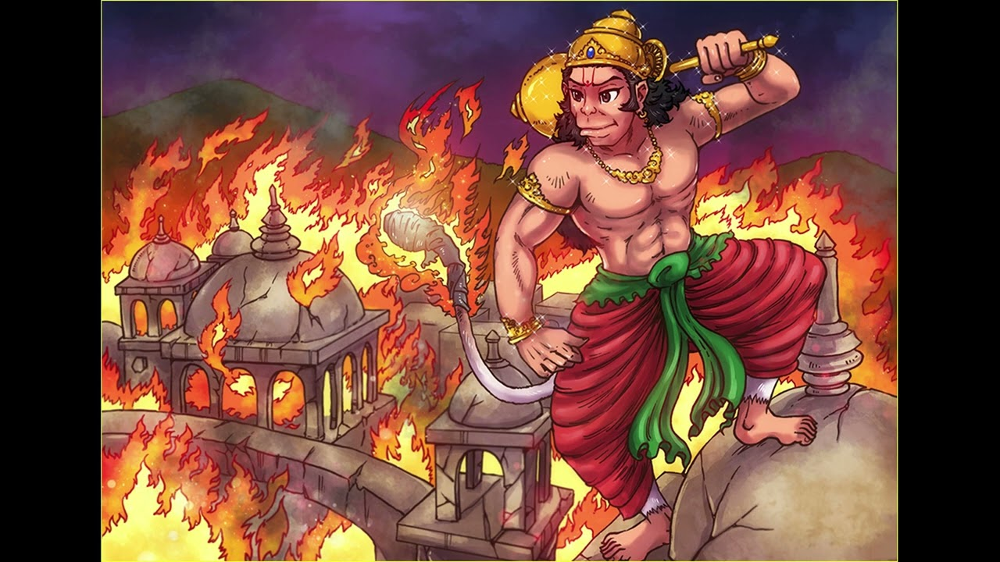As Rama and his army prepared to cross the ocean to Lanka, he encountered a significant challenge: the vast sea stood in their way. Rama prayed to the Sea God, asking for his help to build a path across the ocean. The Sea God appeared before Rama and acknowledged his devotion, offering to help. He assured Rama that his army would be able to build a bridge. With the Sea God's blessings, the Vanara (monkey) army began constructing a massive bridge, allowing Rama to walk across the ocean to rescue Sita and prepare for the final battle against Ravana.
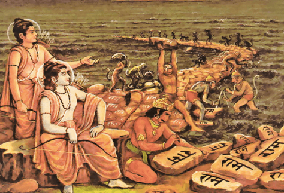During the battle in Lanka, Lakshmana was gravely wounded and fell unconscious. Rama, desperate to save him, sent Hanuman to find the Sanjeevani herb. Unable to identify it, Hanuman lifted an entire mountain and brought it to Lanka. The herb revived Lakshmana, allowing him to rejoin the battle.
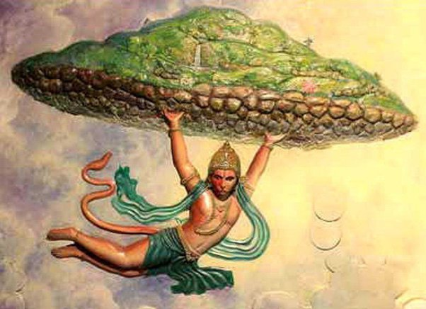Rama fought valiantly against Ravana, but Ravana could not be killed anywhere or at any time due to a special blessing he had received from Lord Brahma. Realizing this, Rama invoked the powerful Brahmastra, which struck Ravana at his navel, the source of his immortality. This final blow ended the battle, allowing Rama to rescue Sita.
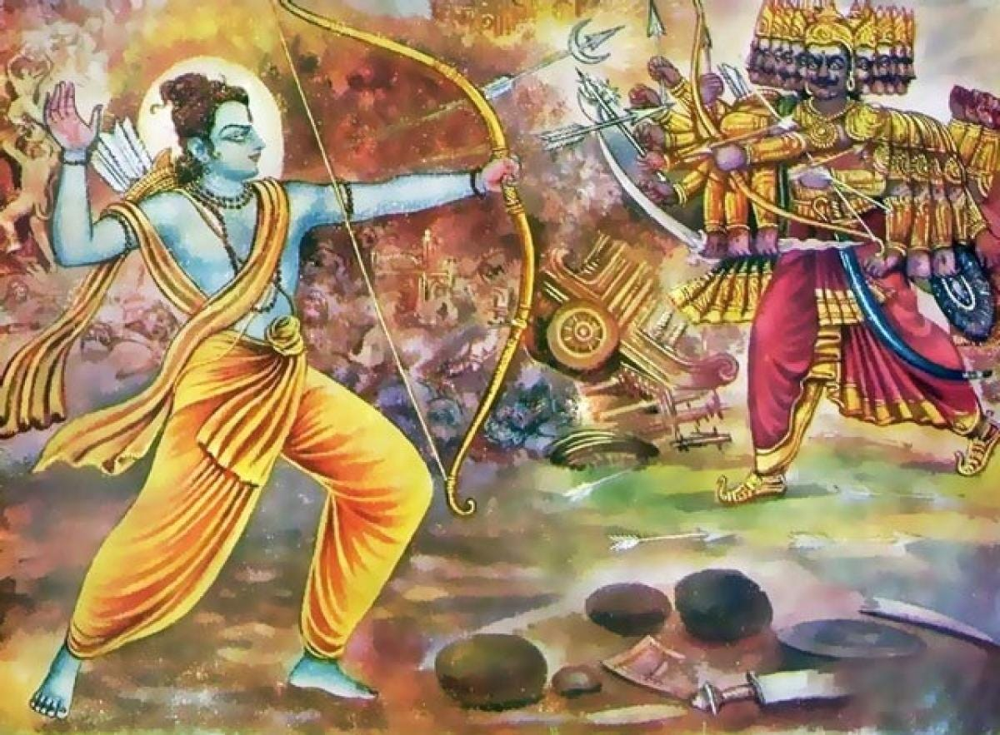After defeating Ravana, Rama and Sita returned to Ayodhya, where Rama was crowned king, symbolizing the triumph of good over evil.
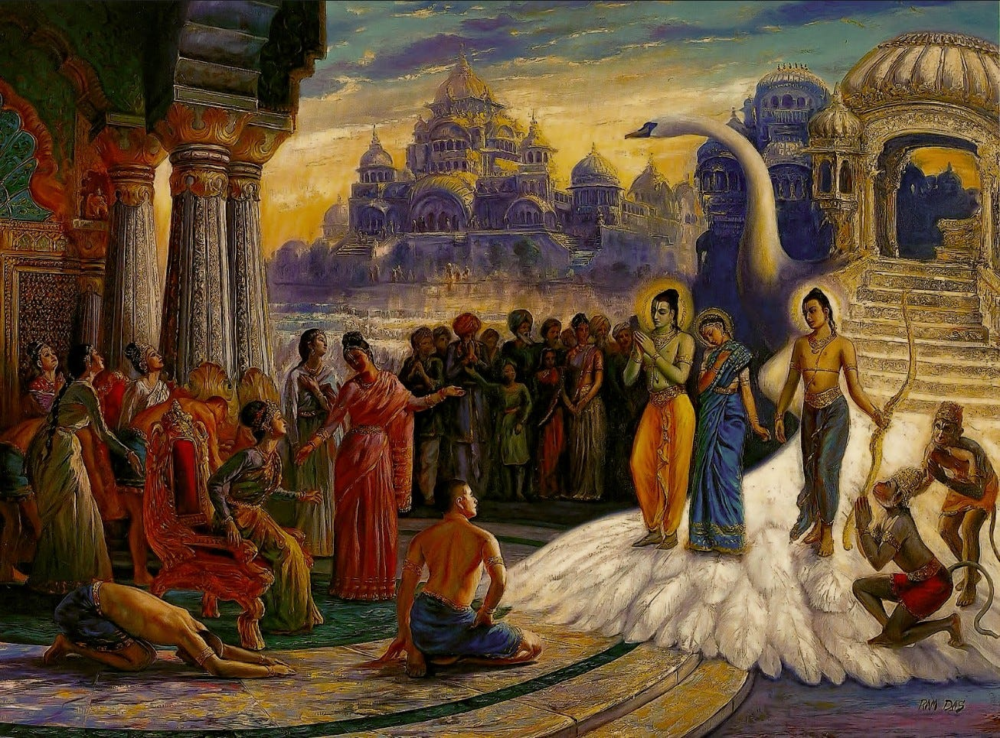The Ramayana continues to be an enduring symbol of virtue, devotion, and the fight against injustice in Hindu culture and beyond.